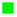

<!doctype html>
<html lang="en">
    <head>
        <meta charset="utf-8">
        <meta http-equiv="X-UA-Compatible" content="IE=edge">
        <meta name="viewport" content="initial-scale=1,user-scalable=no,maximum-scale=1,width=device-width">
        <meta name="mobile-web-app-capable" content="yes">
        <meta name="apple-mobile-web-app-capable" content="yes">
        <link rel="stylesheet" href="css/leaflet.css"><link rel="stylesheet" href="css/L.Control.Locate.min.css">
        <link rel="stylesheet" href="css/qgis2web.css"><link rel="stylesheet" href="css/fontawesome-all.min.css">
        <link rel="stylesheet" href="css/leaflet-control-geocoder.Geocoder.css">
        <style>
        #map {
            width: 1681px;
            height: 813px;
        }
        </style>
        <title></title>
    </head>
    <body>
        <div id="map">
        </div>
        <script src="js/qgis2web_expressions.js"></script>
        <script src="js/leaflet.js"></script><script src="js/L.Control.Locate.min.js"></script>
        <script src="js/leaflet-svg-shape-markers.min.js"></script>
        <script src="js/leaflet.rotatedMarker.js"></script>
        <script src="js/leaflet.pattern.js"></script>
        <script src="js/leaflet-hash.js"></script>
        <script src="js/Autolinker.min.js"></script>
        <script src="js/rbush.min.js"></script>
        <script src="js/labelgun.min.js"></script>
        <script src="js/labels.js"></script>
        <script src="js/leaflet.wms.js"></script>
        <script src="js/leaflet-control-geocoder.Geocoder.js"></script>
        <script src="data/EdificiosUniversitarios_2.js"></script>
        <script src="data/AparcamientoBicicletas_3.js"></script>
        <script>
        var map = L.map('map', {
            zoomControl:true, maxZoom:28, minZoom:1
        }).fitBounds([[43.46914924722628,-3.8088969813777322],[43.473587564026566,-3.7962356292059516]]);
        var hash = new L.Hash(map);
        map.attributionControl.setPrefix('<a href="https://github.com/tomchadwin/qgis2web" target="_blank">qgis2web</a> &middot; <a href="https://leafletjs.com" title="A JS library for interactive maps">Leaflet</a> &middot; <a href="https://qgis.org">QGIS</a>');
        var autolinker = new Autolinker({truncate: {length: 30, location: 'smart'}});
        L.control.locate({locateOptions: {maxZoom: 19}}).addTo(map);
        var bounds_group = new L.featureGroup([]);
        function setBounds() {
        }
        map.createPane('pane_OrtofotoPNOA_0');
        map.getPane('pane_OrtofotoPNOA_0').style.zIndex = 400;
        var layer_OrtofotoPNOA_0 = L.WMS.layer("https://www.ign.es/wms-inspire/pnoa-ma", "OI.OrthoimageCoverage", {
            pane: 'pane_OrtofotoPNOA_0',
            format: 'image/png',
            uppercase: true,
            transparent: true,
            continuousWorld : true,
            tiled: true,
            info_format: 'text/html',
            opacity: 1,
            identify: false,
            attribution: '',
        });
        map.addLayer(layer_OrtofotoPNOA_0);
        map.createPane('pane_MapaBaseESRIStreet_1');
        map.getPane('pane_MapaBaseESRIStreet_1').style.zIndex = 401;
        var layer_MapaBaseESRIStreet_1 = L.tileLayer('https://server.arcgisonline.com/ArcGIS/rest/services/World_Street_Map/MapServer/tile/{z}/{y}/{x}', {
            pane: 'pane_MapaBaseESRIStreet_1',
            opacity: 1.0,
            attribution: '',
            minZoom: 1,
            maxZoom: 28,
            minNativeZoom: 0,
            maxNativeZoom: 18
        });
        layer_MapaBaseESRIStreet_1;
        map.addLayer(layer_MapaBaseESRIStreet_1);
        function pop_EdificiosUniversitarios_2(feature, layer) {
            var popupContent = '<table>\
                    <tr>\
                        <td colspan="2">' + (feature.properties['gml_id'] !== null ? autolinker.link(feature.properties['gml_id'].toLocaleString()) : '') + '</td>\
                    </tr>\
                    <tr>\
                        <td colspan="2">' + (feature.properties['beginLifes'] !== null ? autolinker.link(feature.properties['beginLifes'].toLocaleString()) : '') + '</td>\
                    </tr>\
                    <tr>\
                        <td colspan="2">' + (feature.properties['conditionO'] !== null ? autolinker.link(feature.properties['conditionO'].toLocaleString()) : '') + '</td>\
                    </tr>\
                    <tr>\
                        <td colspan="2">' + (feature.properties['beginning'] !== null ? autolinker.link(feature.properties['beginning'].toLocaleString()) : '') + '</td>\
                    </tr>\
                    <tr>\
                        <td colspan="2">' + (feature.properties['end'] !== null ? autolinker.link(feature.properties['end'].toLocaleString()) : '') + '</td>\
                    </tr>\
                    <tr>\
                        <td colspan="2">' + (feature.properties['endLifespa'] !== null ? autolinker.link(feature.properties['endLifespa'].toLocaleString()) : '') + '</td>\
                    </tr>\
                    <tr>\
                        <td colspan="2">' + (feature.properties['informatio'] !== null ? autolinker.link(feature.properties['informatio'].toLocaleString()) : '') + '</td>\
                    </tr>\
                    <tr>\
                        <td colspan="2">' + (feature.properties['reference'] !== null ? autolinker.link(feature.properties['reference'].toLocaleString()) : '') + '</td>\
                    </tr>\
                    <tr>\
                        <td colspan="2">' + (feature.properties['localId'] !== null ? autolinker.link(feature.properties['localId'].toLocaleString()) : '') + '</td>\
                    </tr>\
                    <tr>\
                        <td colspan="2">' + (feature.properties['namespace'] !== null ? autolinker.link(feature.properties['namespace'].toLocaleString()) : '') + '</td>\
                    </tr>\
                    <tr>\
                        <td colspan="2">' + (feature.properties['horizontal'] !== null ? autolinker.link(feature.properties['horizontal'].toLocaleString()) : '') + '</td>\
                    </tr>\
                    <tr>\
                        <td colspan="2">' + (feature.properties['horizont_1'] !== null ? autolinker.link(feature.properties['horizont_1'].toLocaleString()) : '') + '</td>\
                    </tr>\
                    <tr>\
                        <td colspan="2">' + (feature.properties['horizont_2'] !== null ? autolinker.link(feature.properties['horizont_2'].toLocaleString()) : '') + '</td>\
                    </tr>\
                    <tr>\
                        <td colspan="2">' + (feature.properties['referenceG'] !== null ? autolinker.link(feature.properties['referenceG'].toLocaleString()) : '') + '</td>\
                    </tr>\
                    <tr>\
                        <td colspan="2">' + (feature.properties['currentUse'] !== null ? autolinker.link(feature.properties['currentUse'].toLocaleString()) : '') + '</td>\
                    </tr>\
                    <tr>\
                        <td colspan="2">' + (feature.properties['numberOfBu'] !== null ? autolinker.link(feature.properties['numberOfBu'].toLocaleString()) : '') + '</td>\
                    </tr>\
                    <tr>\
                        <td colspan="2">' + (feature.properties['numberOfDw'] !== null ? autolinker.link(feature.properties['numberOfDw'].toLocaleString()) : '') + '</td>\
                    </tr>\
                    <tr>\
                        <td colspan="2">' + (feature.properties['numberOfFl'] !== null ? autolinker.link(feature.properties['numberOfFl'].toLocaleString()) : '') + '</td>\
                    </tr>\
                    <tr>\
                        <td colspan="2">' + (feature.properties['documentLi'] !== null ? autolinker.link(feature.properties['documentLi'].toLocaleString()) : '') + '</td>\
                    </tr>\
                    <tr>\
                        <td colspan="2">' + (feature.properties['format'] !== null ? autolinker.link(feature.properties['format'].toLocaleString()) : '') + '</td>\
                    </tr>\
                    <tr>\
                        <td colspan="2">' + (feature.properties['sourceStat'] !== null ? autolinker.link(feature.properties['sourceStat'].toLocaleString()) : '') + '</td>\
                    </tr>\
                    <tr>\
                        <td colspan="2">' + (feature.properties['officialAr'] !== null ? autolinker.link(feature.properties['officialAr'].toLocaleString()) : '') + '</td>\
                    </tr>\
                    <tr>\
                        <td colspan="2">' + (feature.properties['value'] !== null ? autolinker.link(feature.properties['value'].toLocaleString()) : '') + '</td>\
                    </tr>\
                    <tr>\
                        <td colspan="2">' + (feature.properties['value_uom'] !== null ? autolinker.link(feature.properties['value_uom'].toLocaleString()) : '') + '</td>\
                    </tr>\
                </table>';
            layer.bindPopup(popupContent, {maxHeight: 400});
        }

        function style_EdificiosUniversitarios_2_0() {
            return {
                pane: 'pane_EdificiosUniversitarios_2',
                stroke: false, 
                fill: true,
                fillOpacity: 1,
                fillColor: 'rgba(125,139,143,1.0)',
                interactive: true,
            }
        }
        map.createPane('pane_EdificiosUniversitarios_2');
        map.getPane('pane_EdificiosUniversitarios_2').style.zIndex = 402;
        map.getPane('pane_EdificiosUniversitarios_2').style['mix-blend-mode'] = 'normal';
        var layer_EdificiosUniversitarios_2 = new L.geoJson(json_EdificiosUniversitarios_2, {
            attribution: '',
            interactive: true,
            dataVar: 'json_EdificiosUniversitarios_2',
            layerName: 'layer_EdificiosUniversitarios_2',
            pane: 'pane_EdificiosUniversitarios_2',
            onEachFeature: pop_EdificiosUniversitarios_2,
            style: style_EdificiosUniversitarios_2_0,
        });
        bounds_group.addLayer(layer_EdificiosUniversitarios_2);
        map.addLayer(layer_EdificiosUniversitarios_2);
        function pop_AparcamientoBicicletas_3(feature, layer) {
            var popupContent = '<table>\
                    <tr>\
                        <th scope="row">TIPO</th>\
                        <td>' + (feature.properties['TIPO'] !== null ? autolinker.link(feature.properties['TIPO'].toLocaleString()) : '') + '</td>\
                    </tr>\
                    <tr>\
                        <th scope="row">N.  PLAZAS</th>\
                        <td>' + (feature.properties['N.  PLAZAS'] !== null ? autolinker.link(feature.properties['N.  PLAZAS'].toLocaleString()) : '') + '</td>\
                    </tr>\
                    <tr>\
                        <th scope="row">CUB/DESC</th>\
                        <td>' + (feature.properties['CUB/DESC'] !== null ? autolinker.link(feature.properties['CUB/DESC'].toLocaleString()) : '') + '</td>\
                    </tr>\
                    <tr>\
                        <th scope="row">Z. SEGURA</th>\
                        <td>' + (feature.properties['Z. SEGURA'] !== null ? autolinker.link(feature.properties['Z. SEGURA'].toLocaleString()) : '') + '</td>\
                    </tr>\
                    <tr>\
                        <th scope="row">EDIFICIO</th>\
                        <td>' + (feature.properties['EDIFICIO'] !== null ? autolinker.link(feature.properties['EDIFICIO'].toLocaleString()) : '') + '</td>\
                    </tr>\
                    <tr>\
                        <th scope="row">CONJUNTO</th>\
                        <td>' + (feature.properties['CONJUNTO'] !== null ? autolinker.link(feature.properties['CONJUNTO'].toLocaleString()) : '') + '</td>\
                    </tr>\
                </table>';
            layer.bindPopup(popupContent, {maxHeight: 400});
        }

        function style_AparcamientoBicicletas_3_0(feature) {
            switch(String(feature.properties['TIPO'])) {
                case 'AYTO':
                    return {
                pane: 'pane_AparcamientoBicicletas_3',
                shape: 'square',
                radius: 6.0,
                stroke: false,
                fill: true,
                fillOpacity: 1,
                fillColor: 'rgba(255,42,163,1.0)',
                interactive: true,
            }
                    break;
                case 'Conjunto de suelo':
                    return {
                pane: 'pane_AparcamientoBicicletas_3',
                shape: 'square',
                radius: 6.0,
                stroke: false,
                fill: true,
                fillOpacity: 1,
                fillColor: 'rgba(1,247,255,1.0)',
                interactive: true,
            }
                    break;
                case 'Tubular individual (U)':
                    return {
                pane: 'pane_AparcamientoBicicletas_3',
                shape: 'square',
                radius: 6.0,
                stroke: false,
                fill: true,
                fillOpacity: 1,
                fillColor: 'rgba(0,241,0,1.0)',
                interactive: true,
            }
                    break;
            }
        }
        map.createPane('pane_AparcamientoBicicletas_3');
        map.getPane('pane_AparcamientoBicicletas_3').style.zIndex = 403;
        map.getPane('pane_AparcamientoBicicletas_3').style['mix-blend-mode'] = 'normal';
        var layer_AparcamientoBicicletas_3 = new L.geoJson(json_AparcamientoBicicletas_3, {
            attribution: '',
            interactive: true,
            dataVar: 'json_AparcamientoBicicletas_3',
            layerName: 'layer_AparcamientoBicicletas_3',
            pane: 'pane_AparcamientoBicicletas_3',
            onEachFeature: pop_AparcamientoBicicletas_3,
            pointToLayer: function (feature, latlng) {
                var context = {
                    feature: feature,
                    variables: {}
                };
                return L.shapeMarker(latlng, style_AparcamientoBicicletas_3_0(feature));
            },
        });
        bounds_group.addLayer(layer_AparcamientoBicicletas_3);
        map.addLayer(layer_AparcamientoBicicletas_3);
        var osmGeocoder = new L.Control.Geocoder({
            collapsed: true,
            position: 'topleft',
            text: 'Search',
            title: 'Testing'
        }).addTo(map);
        document.getElementsByClassName('leaflet-control-geocoder-icon')[0]
        .className += ' fa fa-search';
        document.getElementsByClassName('leaflet-control-geocoder-icon')[0]
        .title += 'Search for a place';
        var baseMaps = {};
        L.control.layers(baseMaps,{'Aparcamiento Bicicletas<br /><table><tr><td style="text-align: center;"></td><td>AYTO</td></tr><tr><td style="text-align: center;"></td><td>Conjunto de suelo</td></tr><tr><td style="text-align: center;"></td><td>Tubular individual (U)</td></tr></table>': layer_AparcamientoBicicletas_3,' Edificios Universitarios': layer_EdificiosUniversitarios_2,"Mapa Base (ESRI Street)": layer_MapaBaseESRIStreet_1,"Ortofoto PNOA": layer_OrtofotoPNOA_0,},{collapsed:false}).addTo(map);
        setBounds();
        </script>
    </body>
</html>
